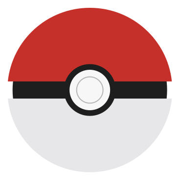

Normal
Eevee (イーブイIibui )
É um Pokémon do tipo Normal introduzido na Geração I. É conhecido por ser o Pokémon com o maior número de possibilidades de evolução (8), devido à sua composição genética instável.Eevee é uma pequena criatura parecida com uma raposa com pelo marrom espesso. Seu focinho é muito felino, com um nariz pequeno, preto e triangular. Tem um rufo fofo de cor creme em volta do pescoço e uma cauda curta, espessa e semelhante a uma raposa com uma ponta cremosa. Eevee tem olhos redondos e castanhos profundos, longas orelhas de coelho e almofadas de pata rosa em seus pezinhos. Suas patas são pequenas, com três dedos e sem garras visíveis.

Água
Vaporeon
compartilha traços físicos com animais aquáticos e criaturas terrestres na aparência. Seu corpo é azul claro com uma gola branca em volta do pescoço. Vaporeon tem barbatanas semelhantes a orelhas creme-amareladas feitas de teias em ambos os lados de sua cabeça, juntamente com uma terceira na parte superior. Vaporeon tem sulcos azuis que percorrem o comprimento de sua coluna e até a barbatana caudal. A cauda lembra a de um golfinho ou baleia.A estrutura molecular do Vaporeon está próxima da água, e seu corpo brilha quando a luz do sol atinge certos ângulos por causa disso. Tem uma forma de corpo graciosa e esbelta, adaptando-se ainda mais às regiões aquáticas para que possa nadar mais rápido.
Elétrico
Jolteon
É coberto de pêlo amarelo com uma franja pontiaguda ao redor de sua cauda e um rufo branco em volta do pescoço. Suas orelhas são grandes e pontudas com interiores pretos, e seus olhos e nariz pequeno são pretos. Tem pernas finas e patas pequenas, cada uma com três dedos e uma almofada de pata rosa. A pele espinhosa de Jolteon é feita de agulhas eletricamente carregadas e gera íons carregados negativamente, que criam um ruído de faísca enquanto se move. Ele também tem um órgão gerador de eletricidade em seus pulmões. A eletricidade estática em sua pele amplifica a eletricidade de baixo nível gerada por suas células e permite que ela descarregue relâmpagos de 10.000 volts.
Fogo
Flareon
Ele tem um pelo laranja vívido com uma juba amarela espessa, uma cauda longa e fofa em forma de chama e um tufo de pelo amarelo no topo da cabeça, em forma de bola de fogo. Tem um focinho curto parecido com um gato, grandes olhos pretos amendoados e um pequeno nariz triangular preto. Suas orelhas são longas e semelhantes a coelhos, com pontas semelhantes a chamas. Tem patas grandes e volumosas sem garras visíveis. Seu corpo é geralmente mais volumoso do que a maioria das Eeveelutions. De todas as Eeveelutions, Flareon se parece mais com Eevee. Flareon é um Pokémon tímido, como visto em Eevee and Friends . É muito sensível emocionalmente e quando está nervoso, libera grandes quantidades de calor através de sua pele. Flareon pode ficar muito nervoso ao conhecer novas pessoas. Tem uma personalidade doce e calorosa. Normalmente Flareon não gosta de ser o centro das atenções.
Psíquico
Espeon
Espeon é um Pokémon mamífero quadrúpede com características de gato. Tem pêlo roxo elegante e lilás cobre seu corpo. Tem uma jóia vermelha presa à testa. Seu rosto é distintamente semelhante ao de um gato com um focinho curto e rombudo e um nariz minúsculo e triangular. Tem longas orelhas pontudas quase semelhantes a uma raposa fennec, e tufos de pêlo semelhantes a bigodes saindo de cada lado de seu rosto logo abaixo de suas orelhas. Seus olhos são roxos profundos e amendoados com pupilas brancas. Tem uma cauda delgada que se afunila em duas extremidades.